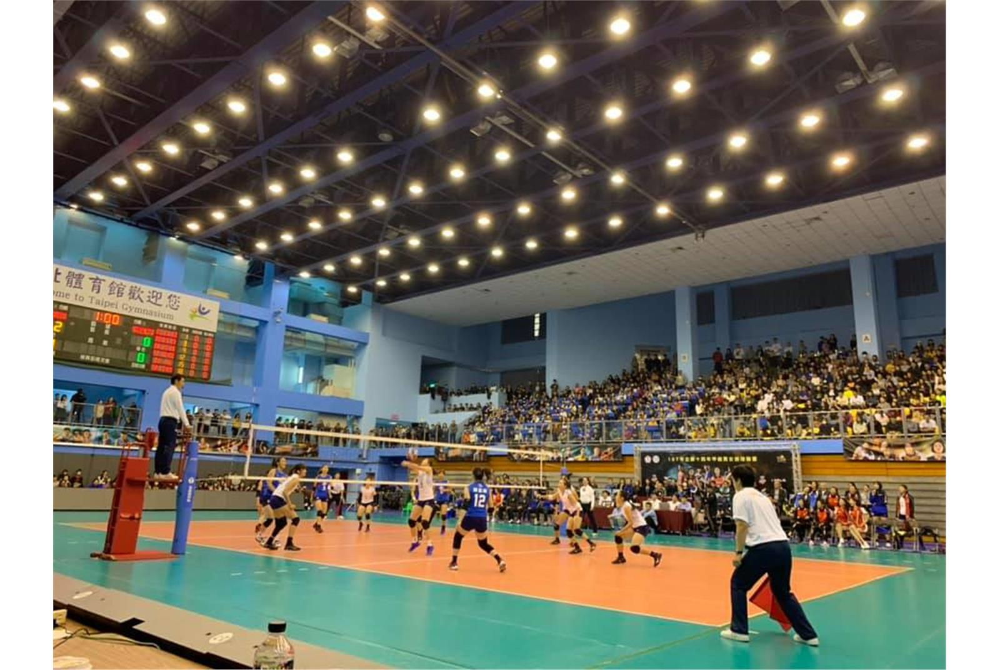

VOLLEYBALL
介紹
排球，是一種團體球類運動，雙方各6名球員上場，隔著排球網分立場地兩側，其目的在於用手擊球以令球落至對方場中地面而得分。
History
起源
排球運動起源於美國。1895年2月9日，由美國麻省霍利奧克基督教青年會幹事威廉.摩根發明。起初，人們分立在網球場球網的兩側，將排球托來托去，參加人數、擊球次數不限。比賽中網高1.98米。這就是排球的雛形。1896年，在麻省斯普林菲爾德的國際YMCA訓練學校（現名春田學院）舉行了第一場公開比賽。 初期，排球被稱為Mintonette（小網子之意）。1896年，霍爾斯泰德教授根據比賽特點，提議改為Volleyball（空中擊球），即現代國際通用名稱Volleyball（排球）。斯普林菲爾德的國際YMCA訓練學校是最早傳播排球運動的組織。YMCA的幹事、傳教士、學校畢業生以及第一次世界大戰中的美國軍人，都是排球運動的初期傳播者。
後續推廣與規則演變
排球運動首先傳入加拿大、古巴、巴西等國，第一次世界大戰（1914至1918年）期間傳入法國、義大利等歐洲國家。1917年，比賽制度由21分制改為15分制。1920年，每邊三次擊球和後排攻擊規則成立。1922年，第一次青年會美國錦標賽在紐約布魯克林舉行。1928年，全美排球協會成立。 第二次世界大戰後，東歐國家排球運動技術水準長期居世界領先地位，歐洲各國從一開始接觸的就是6人制排球，因此技戰術水準得以長久領先。 排球運動傳入亞洲始於1900年的印度。1913年第一屆遠東運動會把排球列入正式比賽，由於當時規則尚不完善，亞洲各國的排球運動經歷了16人制、12人制和9人制，直到1950年代，才逐步過渡到6人制排球。 2000年，經若干新規則的修訂，「落地得分制」正式於1月1日起施行，取代以往需要擁有「發球權」的「發球得分制」。
Our Places
夢想的角落
「大家都說我和培閎勇敢，但我們真的勇敢嗎？或許我們只是不希望自己 在老了之後，和孫子談起自己的年少輕狂時，會有讓我們自己遺憾的故事而已。」－台灣隊長陳建禎 為了讓這個故事被更多人看見，本專書與紀錄片的出版，完全採公益性質， 專書收入在扣除印刷等相關成本後，將全數捐助台灣基層排球。
企業排球聯賽
企業排球聯賽(Top Volleyball League)是中華民國排球協會（中華排協）創辦的業餘排球聯賽，於2004年開始首屆賽事。中華排協希望透過企業聯賽來提升台灣排球的競爭力。在聯賽更上軌道之後，未來朝向「半職業化」甚至「職業化」發展。企業六年更新增3支女子企業隊參賽，也是企業聯賽首度舉辦女子組賽事。企排十一年，男女子組將各增加一隊，使參伍增加至10隊，隊數為歷年之最。